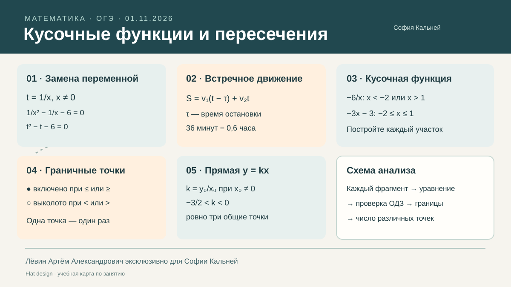

01 · Замена переменной
Решите 1/x² − 5/x + 6 = 0.
Как собрать график из отдельных фрагментов, не потерять граничные точки и найти все значения параметра прямой y = kx.
Когда в уравнении встречаются 1/x и 1/x², полезно обозначить t = 1/x.
t = 1/x и получаем t² − t − 6 = 0.(t − 3)(t + 2) = 0, откуда t = 3 или t = −2.x = 1/3 или x = −1/2.Контроль: исходное ограничение x ≠ 0; после замены обязательно сделайте обратный переход.
При встречном движении расстояния участников складываются. Если первый велосипедист остановился на τ часов, он двигался на это время меньше.
| Велосипедист | Скорость | Время движения | Расстояние |
|---|---|---|---|
| Первый, с остановкой | v₁ | t − τ | v₁(t − τ) |
| Второй, без остановки | v₂ | t | v₂t |
Частая ошибка: 36 минут — это 0,6 часа. После вычисления времени встречи нужно найти именно тот путь, который указан в вопросе.
Внешние части — гипербола, средний участок — отрезок прямой:
На границах x = −2 и x = 1 обе формулы дают соответственно 3 и −6. Граничные точки входят в средний фрагмент.
x.Важное различие: выколотая точка одного фрагмента может совпадать с закрашенной точкой другого; общая точка тогда учитывается один раз.
Число пересечений равно числу различных допустимых решений уравнения f(x) = kx.
Каждый корень должен попасть в промежуток соответствующей ветви. При x = 0 формула не определена.
Проверяйте особый случай k = m: прямые могут быть параллельны или совпадать.
Если прямая проходит через известную точку (x₀, y₀) при x₀ ≠ 0, то k = y₀/x₀. На таких значениях число пересечений может измениться.
Для функции f(x) из раздела 03: ровно три общие точки при −3/2 < k < 0. При k = −3/2 остаются две различные точки.
k и проверьте их отдельно.У гиперболы исключены (−2, −1), (2, 1). Внешняя прямая содержит точки (−2, 5), (2, −3).
Для гиперболы две точки пересечения с y = kx существуют при k > 1/2.
Для внешнего линейного фрагмента допустимое пересечение существует при −5/2 ≤ k < −2 или −2 < k ≤ −3/2.
Ноль пересечений: k < −5/2; k = −2; или −3/2 < k ≤ 1/2.
Граница всегда проверяется по правилу того фрагмента, которому она принадлежит; при x = 0 дробь не определена; параллельные прямые могут не пересекаться; разные участки иногда дают одну и ту же точку.
Выполните упражнения последовательно. Ответы можно раскрыть в конце раздела.
Решите 1/x² − 5/x + 6 = 0.
Решите 9/x² + 3/x − 2 = 0.
Из городов в 114 км друг от друга одновременно навстречу выехали велосипедисты со скоростями 12 и 18 км/ч. Первый остановился на 30 минут, затем продолжил путь до встречи. Какое расстояние проехал второй?
Расстояние 132 км; скорости 15 и 20 км/ч. Второй остановился на 24 минуты, затем продолжил путь до встречи. Сколько километров проехал первый?
Постройте график f(x) = −8/x при x < −2 или x > 2, и f(x) = −2x при −2 ≤ x ≤ 2. Найдите f(−4), f(0), f(4).
Постройте h(x) = −x+2 при x ≤ −3 или x ≥ 3, и h(x) = 3/x при −3 < x < 0 или 0 < x < 3. Укажите выколотые и закрашенные точки и ОДЗ.
Для p(x) = −12/x при x < −3 или x > 2, и p(x) = −2x−2 при −3 ≤ x ≤ 2, найдите все k, дающие ровно три пересечения с y = kx.
Для прямых y = 3x+4 и y = kx укажите, когда общих точек нет и когда одна. Возможны ли две?
Для функции из задания 06 найдите все k, при которых y = kx не имеет общих точек с графиком.
Для q(x) = −4/x при x < −2 или x > 2, и q(x) = −2x при −2 ≤ x ≤ 2, найдите параметры трёх пересечений и бесконечно многих.
| № | Ответ |
|---|---|
| 1 | x = 1/2; 1/3 |
| 2 | x = −3/2; 3 |
| 3 | 72 км |
| 4 | 60 км |
| 5 | f(−4) = 2; f(0) = 0; f(4) = −2 |
| 6 | Выколоты (−3, −1), (3, 1); закрашены (−3, 5), (3, −1); x ≠ 0 |
| 7 | −4/3 < k < 0 |
| 8 | Нет общих точек: k = 3; одна: k ≠ 3; две: невозможно |
| 9 | Смотрите точные интервалы в TeX пособия |
| 10 | Ровно три: −1 < k < 0; бесконечно много: k = −2 |
Пять опорных идей занятия: замена, время движения, кусочная функция, границы и число пересечений.
